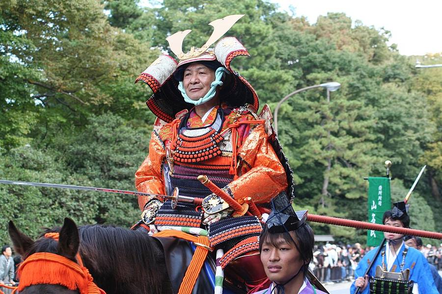
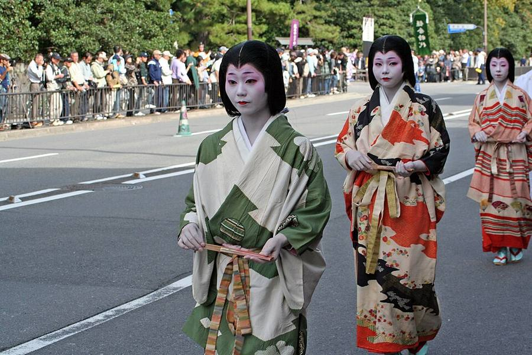
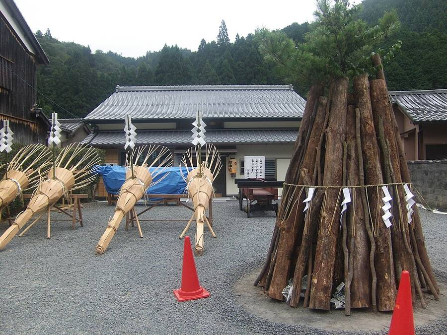
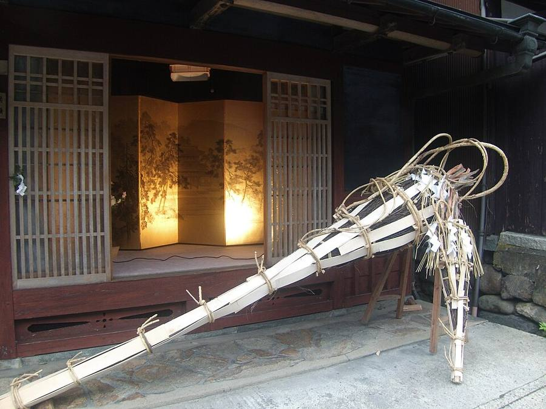
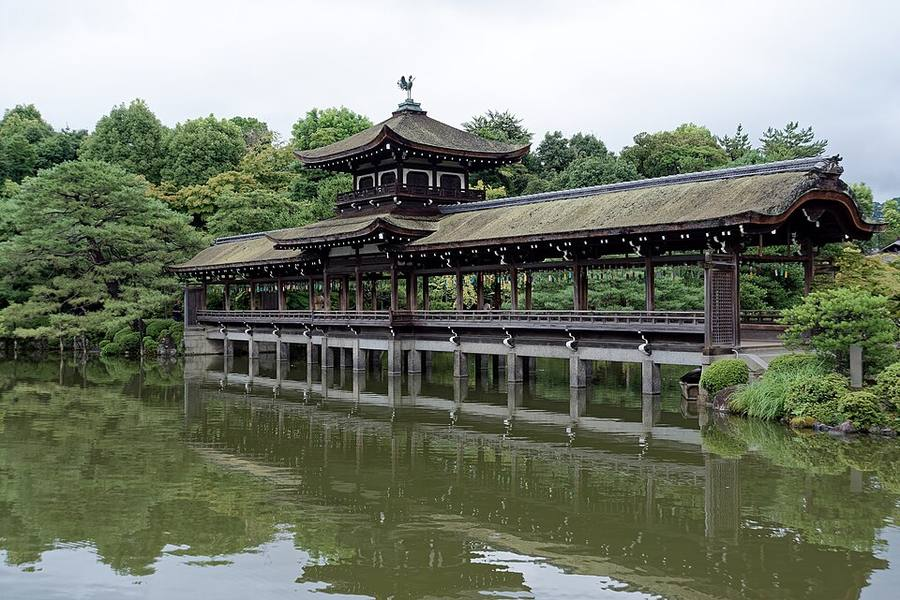
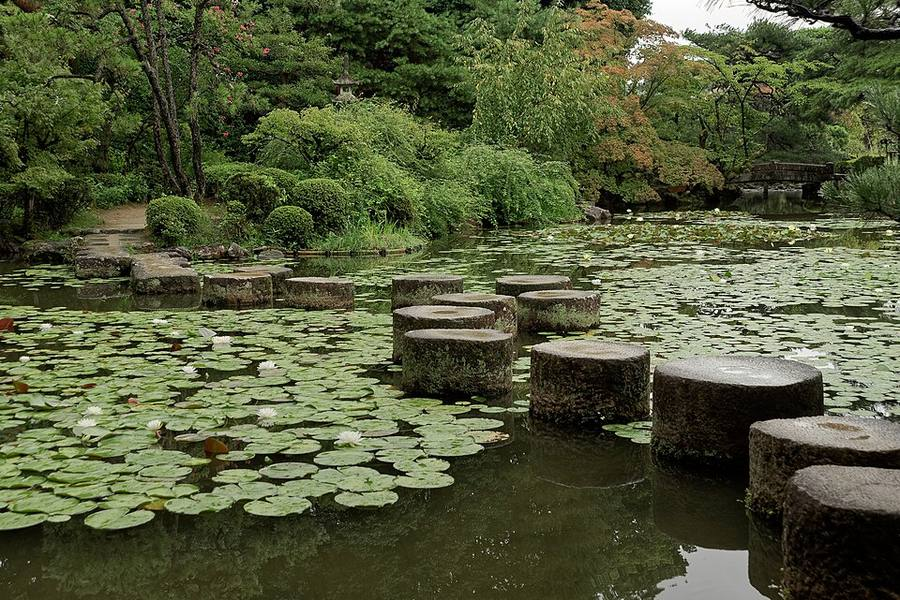

Kyoto: два фестиваля в четверг 22.10
Днём шествие эпох, вечером огненный фестиваль в горной деревне
Зачем и сколько
Почему включаю: опорная дата: 22.10 днём шествие эпох Jidai Matsuri, вечером огненный фестиваль Kurama. Kurama - горная деревня к северу от Kyoto, праздник святилища Yuki: повторяет 940 год, когда божество по указу императора перенесли из дворца в Kurama. Считается одним из трёх «странных» фестивалей Kyoto. С 18:00 у домов зажигают костры, факелы несут сначала дети, потом мужчины с криком «Sairei-ya, sairyo». Около 20:00 больше сотни факелов сходятся у ворот храма Kurama-dera, режут священный канат, юноши поднимаются по лестнице за двумя паланкинами и несут их через деревню. Конец около 0:00. Попасть - только на поезде Eizan, машины с 15:00 не пускают; в 2025 последний поезд из Kurama был в 23:24. Расписание на 2026 обещают выложить ближе к дате.
Сколько дней и почему: В1 и В3: с ср 21.10, В2: с вт 20.10. После фестиваля - сразу в Osaka или дальше по концовке.
Как добраться: из Kanazawa 2 ч 04 мин; в Osaka 28 минут.
Погода в твои дни (Open-Meteo, 14.10 13:01): Kyoto: +27/+19, 🌧 дождь 7 мм; Kyoto: +28/+19, 🌦 местами дождь; Kyoto: +25/+19, 🌦 местами дождь; Kyoto: +20/+14, 🌧 дождь 87 мм


















Jidai Matsuri, Праздник эпох
- Один из трёх главных фестивалей Kyoto. Около 2 000 горожан в костюмах эпох: от основания столицы Heian-kyo (782-806) до эпохи Meiji (1868-1889).
- Идёт от парка императорского дворца Kyoto Gyoen к святилищу Heian Jingu. По гидам старт около 12:00, финиш около 14:30.
- С улицы смотреть бесплатно, платные места 5 000-15 500 ¥.
Kurama no Hi-matsuri, огненный фестиваль
- Тот же вечер, с 18:00, горная деревня Kurama к северу от Kyoto, святилище Yuki.
- Сначала костры у домов и дети с факелами, потом мужчины несут факелы до 3 м и 80 кг, кричат «Sairei, Sairyo». Паланкины спускают по лестнице святилища.
- Проводят в любую погоду и не переносят. Доехать можно только по линии Eizan, поезда переполнены, бывают ограничения на вход.
- Справочный телефон фестиваля: 075-741-4511 (работает 1.09-31.10).
Видео: Kurama, 4K, Jidai Matsuri.
Как добраться
Из Kanazawa около 2 ч. Из Takayama через Nagoya около 3 ч 16 мин.
Видео
 Kyoto Festival: Jidai Matsuri [4K]
Kyoto Festival: Jidai Matsuri [4K]Discover Kyoto · 14 мин
 Kyoto Festival of the Ages: Jidai Matsuri 時代祭
Kyoto Festival of the Ages: Jidai Matsuri 時代祭Ronin Dave · 35 мин
 1000 Years of Kyoto's History in One Afternoon | Jidai Matsuri Festival Guide
1000 Years of Kyoto's History in One Afternoon | Jidai Matsuri Festival GuideYour Japan Guide · 5 мин
 [Kyoto, Japan] Kurama Fire Festival | Rising Flames and Smoke [4K]
[Kyoto, Japan] Kurama Fire Festival | Rising Flames and Smoke [4K]The KYOTO · 28 мин
 京都 鞍馬の火祭 : Kyoto Kurama Fire Festival
京都 鞍馬の火祭 : Kyoto Kurama Fire Festival稲田大樹 / Daiki Inada · 23 мин
 One of Japan's Top Fire Festivals (Kurama No Hi in Kyoto)
One of Japan's Top Fire Festivals (Kurama No Hi in Kyoto)Your Japan Guide · 5 мин
Страница собрана 12-13.10, блок «Зачем и сколько» и прогнозы обновлены 14.10.2026. Поезда и автобусы: Yahoo!乗換案内 (запросы 13-14.10). Погода: Open-Meteo. Листва: Weathernews. Часы и цены: официальные сайты и japan-guide.com. Видео: YouTube. Фото: Wikimedia Commons, автор и лицензия под каждым. Отели не проверялись и не бронировались.